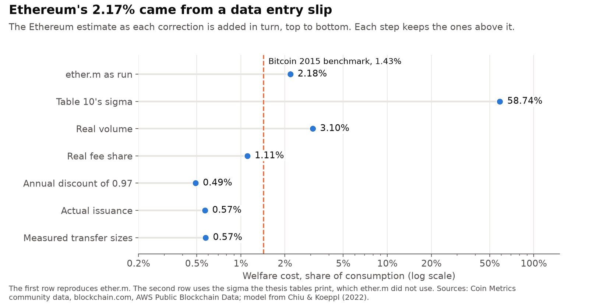
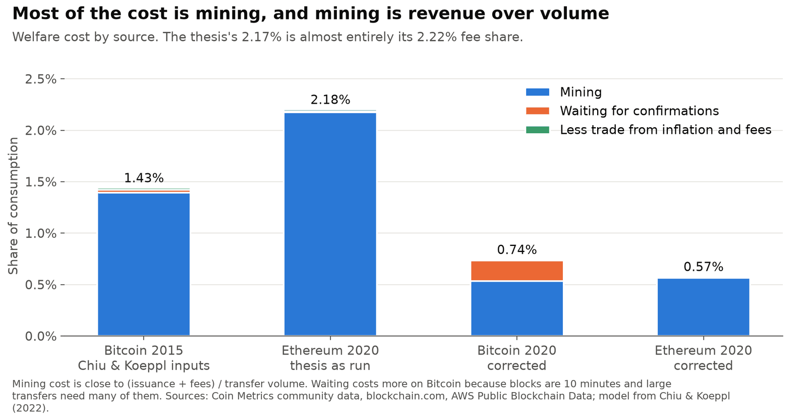
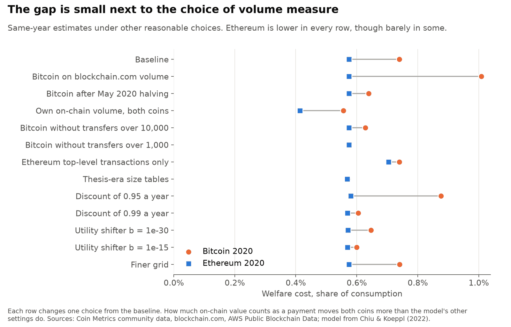
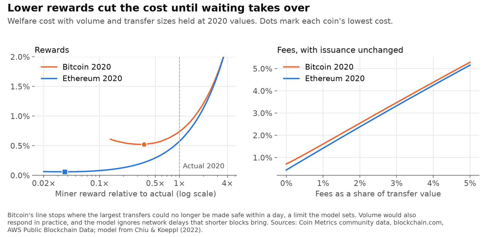
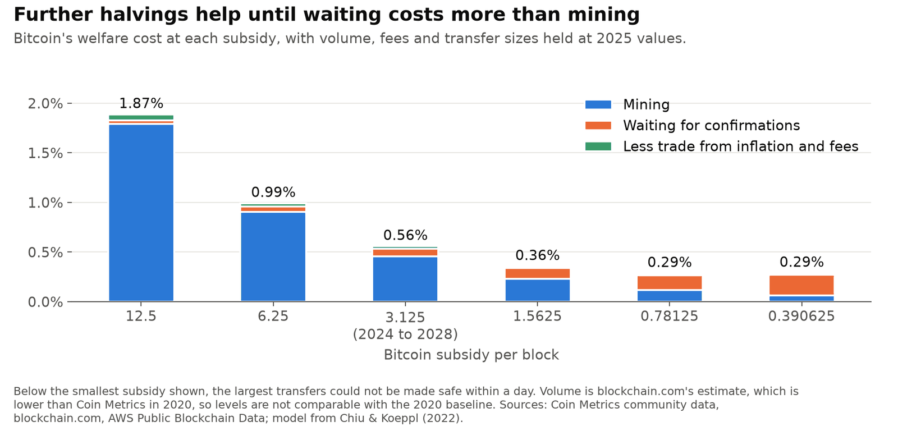

The welfare cost of Proof of Work, revisited
My 2021 MA thesis at Allameh Tabataba'i University applied Chiu and Koeppl's model of Proof-of-Work payments to Ethereum and compared it with Bitcoin. It reported a welfare cost of 2.17% of consumption for Ethereum and 1.43% for Bitcoin, and concluded that Bitcoin was the better monetary system. Checking it in 2026, I found errors in the Ethereum inputs that decided that answer. This page states them and reports what the model gives without them.
Personal project: my own analysis of publicly available data. It is not associated with my work for any current or past employer and does not represent their views.
At a glance
| Question | 2021 thesis | Corrected |
|---|---|---|
| Welfare cost, Bitcoin | 1.43% (2015 data) | 0.74% (2020 data) |
| Welfare cost, Ethereum | 2.17% (2020 data) | 0.57% (2020 data) |
| Which costs less? | Bitcoin | Ethereum, by a modest margin, on the same year |
| Multiple of a cash system with 2% inflation, Bitcoin and Ethereum | 478× and 725× | 136× and 476× |
| Inflation with the same welfare, Bitcoin and Ethereum | 234% and 355% | 83% and 215% |
Welfare cost is the share of consumption people would give up to avoid the system's costs, against an ideal payment system.
What was wrong
The Bitcoin number reproduces: this code gives 1.43% from the same inputs. The Ethereum number does not survive a check of its inputs.

- Volume per block. The code used the per-day volume as the per-block volume. That made sigma, the daily chance of a trade, 4.71, which is impossible for a probability. The thesis's table prints 0.0008, but that is not what was run, and running it gives 58.7%.
- Volume itself. The workbook divided the transfer count by the mean size where it should multiply. Real 2020 volume is about 3.118 million ETH a day, so sigma is about 0.028.
- Fee share. The thesis used 2.22%. Total fees were 4,164 ETH a day, so the share is 0.13%.
- Discounting. The code reused Bitcoin's discount per 10-minute block on 15-second blocks, which means an annual discount factor of 0.296 where 0.97 was intended.
- Different years. Bitcoin was 2015 data and Ethereum 2020. Bitcoin's subsidy fell from 25 to 6.25 coins per block in between.
- Scaled results. Ethereum's 725× and 354.5% were not computed. As the thesis says, they are Bitcoin's figures multiplied by 2.17/1.43.
The first and third errors are why the thesis's number looks reasonable: with a sigma of 4.71, the cost is almost exactly the 2.22% fee share.
The corrected result

| 2020 | Bitcoin | Ethereum |
|---|---|---|
| Daily chance of a trade (sigma) | 0.0131 | 0.0279 |
| Annual supply growth | 2.49% | 4.56% |
| Fee share of transfer value | 0.030% | 0.134% |
| Welfare cost | 0.74% | 0.57% |
| Of which mining | 0.54% | 0.57% |
| Of which waiting for confirmations | 0.20% | 0.01% |
| Of which less trade from inflation and fees | 0.01% | under 0.01% |
| 95% range from resampling days | 0.72% to 0.75% | 0.57% to 0.58% |
| Value-weighted wait | 23 blocks, just under 4 hours | 39 blocks, about 9 minutes |
Mining costs are about equal. The gap comes from waiting: Ethereum's large transfers wait more blocks but only minutes, and Bitcoin's wait hours.
The multiple and the inflation figure go the other way, and they shouldn't be used to rank the coins. Inflation hurts less when money changes hands more often. Ethereum's sigma is about twice Bitcoin's, so its 2% benchmark cost is much smaller and the same loss looks like a larger multiple.
How firm is the new ranking?

| Change from the baseline | Bitcoin | Ethereum |
|---|---|---|
| Baseline | 0.74% | 0.57% |
| Bitcoin on blockchain.com volume, Chiu and Koeppl's source | 1.01% | 0.57% |
| Bitcoin after the May 2020 halving only | 0.64% | 0.57% |
| Own on-chain volume for both | 0.56% | 0.41% |
| Bitcoin without transfers of 10,000 BTC or more | 0.63% | 0.57% |
| Bitcoin without transfers of 1,000 BTC or more | 0.58% | 0.57% |
| Ethereum top-level transactions only | 0.74% | 0.70% |
| Thesis-era transfer size tables | 0.57% | 0.57% |
| Annual discount 0.95 | 0.88% | 0.58% |
| Annual discount 0.99 | 0.61% | 0.57% |
Ethereum is lower under each alternative I tried, though barely in some. On the sampled days, 1,303 transfers of 10,000 BTC or more hold 67% of measured Bitcoin value, and many of them are probably large holders moving their own coins, which aren't payments. Without everything from 1,000 BTC, the two are level. Bitcoin's volume measures alone differ by a factor of three. I read this as: the thesis's ranking does not hold, Ethereum was somewhat cheaper in 2020, and the data don't support a confident claim about how much.
Rewards, fees and later years

Each extra point of fee share adds about a point of cost, and paying the same reward through fees or new coins makes almost no difference. Lower rewards cut the cost until waiting takes over. Ethereum's low point flatters it, because the model leaves out network delays and the stale blocks that short blocks cause.

On blockchain.com's volume, the only measure still public for these years, Bitcoin's cost fell from 1.01% in 2020 to 0.56% in 2025. Further halvings help until a subsidy of about 0.78 coins per block. Holding volume fixed over decades is a strong assumption.
The model does not apply to Ethereum after the Merge, because its double-spend limit and mining cost come from a hash race. I give only a rough range for 2025, 0.01% to 0.10%, which does not come from the model.
Limits
- Transfers are not all payments. Exchange movements and contract activity count as volume, and the result depends directly on how much of it does.
- Ethereum's volume counts ether only. Token transfers pay fees but their value isn't in the denominator, which overstates Ethereum's cost.
- Volume does not respond to rewards or fees, and prices do not move.
- Mining cost counts resources equal to miner revenue. It leaves out effects on anyone outside the model, such as emissions.
- Waiting cost scales with the model's utility shifter, which has no empirical anchor.
Data
Supply, issuance, fees, volume and counts from Coin Metrics community data; Bitcoin estimated transaction value from blockchain.com; transfer sizes from AWS Public Blockchain Data. Raw Coin Metrics files aren't redistributed. The model is from Chiu and Koeppl, "The Economics of Cryptocurrencies: Bitcoin and Beyond", Canadian Journal of Economics (2022). The Python implementation is my own.